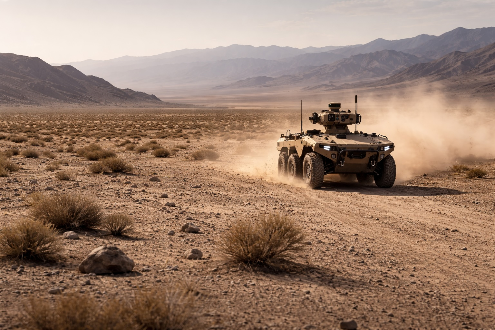
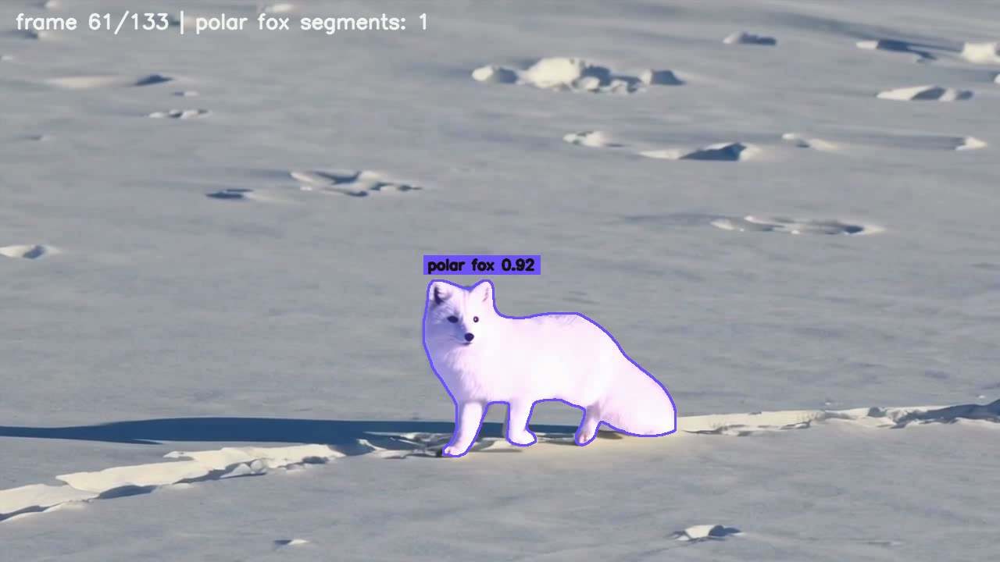

Defence
Contested ground operations
Autonomy and mission planning for unmanned ground vehicles (UGVs) operating in GNSS-denied, radio-jammed, and challenging offroad environments.

What we do
Tess Space builds autonomous guidance and navigation software systems for demanding ground operations across Defence, Mineral exploration, and Biodiversity. We combine onboard AI navigation, mission planning, and field analytics to enable autonomous remote mobility, sensing, and situational awareness.
Operational domains
Tess Space applies the same core AI autonomy stack across defence, mineral exploration, and biodiversity monitoring, adapting onboard navigation, mission workflows, and data analytics to each operating context.
Defence
Autonomy and mission planning for unmanned ground vehicles (UGVs) operating in GNSS-denied, radio-jammed, and challenging offroad environments.

Mineral exploration
Autonomous ground workflows for terrain mapping, field surveys, geotagged analytics, robotic logistics, and stockpile estimation across difficult and distributed sites.

Biodiversity
Field robotics, data collection, and analytics workflows for biodiversity monitoring, under-canopy sensing, and structured environmental observations across complex environments.
Technology
Tess Space combines onboard autonomy, mission planning, and field analytics into one connected system for unmanned ground operations.
TITAN
TITAN provides perception, localization, navigation, teleoperation, and payload integration for demanding field conditions.
TESS DRIVE
TESS DRIVE supports route planning, waypoint execution, operator review, and supervised autonomy across remote and degraded operations.
ANALYTICS
ANALYTICS turns mission outputs into structured observations, detections, mapped insights, and usable operational datasets.

TITAN FIELD TRIALS
February 18, 2026
Recent TITAN trials validated perception, localization, and navigation workflows across degraded communications, remote supervision, and route planning for autonomous ground vehicles.
View on LinkedInMSC 2026
February 2026
The conference engagement highlighted autonomy, mission systems, and guidance technologies for contested, remote, and communication-degraded environments.
View on LinkedIn
SPACE FOREST
March 9, 2026
The SPACE FOREST project explores how autonomous sensing, field robotics, and repeatable data collection can support biodiversity measurement across dense forest environments.
View on LinkedIn
ARCTIC FOX
March 15, 2026
Current workflows focus on detection, segmentation, and repeatable species analytics across polar terrain and difficult environmental conditions.
View on LinkedInPartners


Image preview